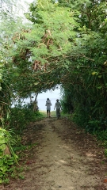
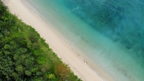

二日間、恩納村という場所のアパートメントを予約してもらっていた。
昨夜は遅くてわからなかったが、目の前にすばらしいビーチがあり朝からみんなで砂浜に出て遊んだ。やたら足の速い埃みたいな白いカニが面白い。
| 友人一家。写真のタイトル\"羨望\" | 空から眺める透き通った海 |
|  |
 |
友人の奥さんだけが運転慣れしているという情けない状況でほぼお任せしていたが、
今日は美ら海水族館まで運転させてもらった。2年ぶりの運転だったが上々。
スコールにも当たったが、景色の良い海岸沿いの道を1時間。理想的なドライブコースだった。
美ら海水族館はジンベエザメをはじめとする様々な魚とその魅せ方が楽しかった。
考えてみるとこれまで大きな水族館には一度も行ったことがなかった気がする。
イルカショーも初めてだったが彼らの賢さに驚いた。どうやって教育しているのだろう。
宿に戻り、息子さんの相手が大変そうな友人たちを置いて心苦しく思いながら、今日も楽しく海に潜ってきた。
夕食のレストランにたどり着くのが大変だったが、その甲斐はあって満足の食事だった。
|